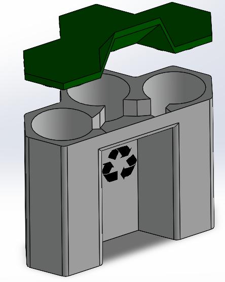

KNN Classifier
For Hack4SDSU, our team built a live waste-sorting prototype that used basic Arduino sensors and a KNN classifier to identify whether an item belonged in compost, landfill, or recycling. I focused mainly on developing the KNN algorithm and creating the CAD design concept, while also helping the team prepare a working live demo under tight time constraints.

Problem
The Hack4SDSU prompt was to innovate in a way that could transform the SDSU student experience. Our team chose the Sustainability & Community Impact challenge after noticing how often students throw non-recyclable items into recycling bins.
The problem we focused on was not just recycling behavior, but recycling knowledge. Many common items are confusing to sort correctly. For example, something like a chip bag may look like packaging that could be recycled, but it actually belongs in landfill.
Solution
We designed a self-sorting waste-bin concept that used simple sensor inputs and a KNN machine learning classifier to identify likely waste categories. The prototype used an infrared sensor, a light sensor, and an acoustic sensor to collect signals related to material type, transparency, and hardness.
Because the available hardware was limited to a basic Arduino starter kit, we generated sample data using Gemini AI, tested the classifier against that data, and reached 74% classification accuracy. For the live demo, we connected the sensors to a breadboard and Arduino Uno, gathered readings through the serial monitor, and displayed the predicted waste category on screen.
Starting From Scratch
I came into the hackathon not knowing anyone and joined a team the day of the event. Our first idea was actually a scheduling tool for student clubs, but after talking with Professor Ben Shen, one of the mentors at the competition, we shifted toward a project that included hardware.
That advice pushed us toward a more hands-on solution. After researching sorting systems and different machine learning options, we landed on a KNN classifier because it was simple enough to implement quickly, but still strong enough to show how sensor data could be used to make sorting decisions.
Building the Concept
One of the biggest constraints was the hardware. We only had access to a basic Arduino starter kit, so we had to get creative with the sensors available to us. We used an infrared sensor to help identify organic material, a light sensor to detect transparent materials, and an acoustic sensor to estimate physical hardness.
I focused on the KNN algorithm and the CAD design concept for the waste-bin prototype. The CAD helped communicate the larger vision: a bin that could sense the item, classify it, and sort it into the correct category.

Testing the Classifier
Since we did not have time to collect a large real-world dataset, we generated sample data using Gemini AI and used that data to test the classifier. The algorithm classified waste into compost, landfill, and recycling categories based on the sensor patterns.
The final KNN model reached 74% accuracy on our test data. It was not perfect, but it was strong enough to support the concept and show that even a very simple sensor setup could produce useful classification behavior.
The Live Demo
After the algorithm and concept were finished, we had to make the physical setup work for a live demonstration. We connected the sensors to a breadboard, wired everything to an Arduino Uno, and used the serial monitor to capture readings and display the predicted waste category.
For testing, we used a banana peel, a potato chip bag, and a recyclable plastic bag. The prototype was built quickly using limited hardware and materials, including parts we purchased at the dollar store to make the trash-can demo presentable.


What I Learned
This was one of the most fun projects I have worked on because everything had to move fast. We had to choose an idea, learn enough about sorting algorithms to build something real, deal with limited sensors, prepare a physical prototype, and present a complete solution in a short amount of time.
The biggest takeaway was learning how to make quick engineering decisions under pressure. The project was not about building a perfect product; it was about building a working proof of concept, explaining the reasoning clearly, and adapting every time the constraints changed.
